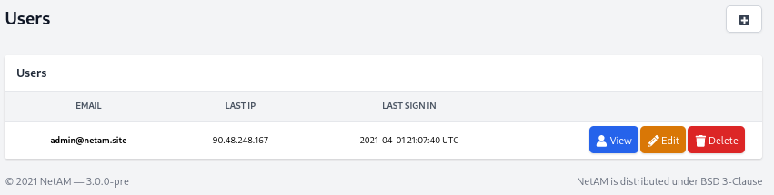
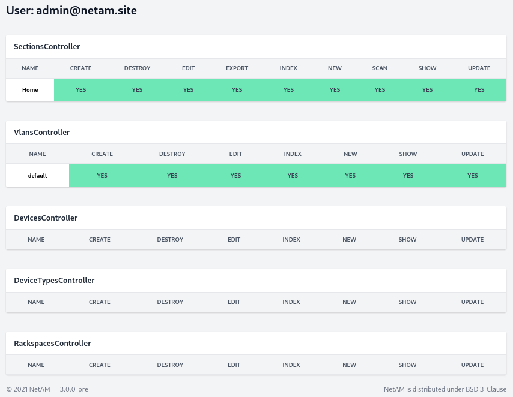
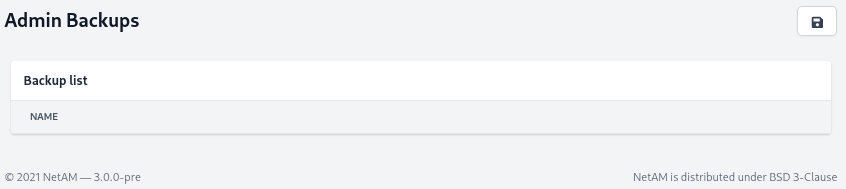
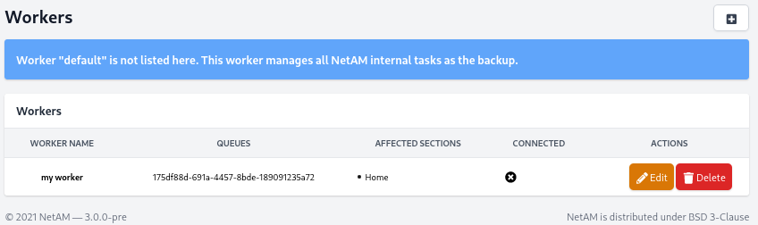
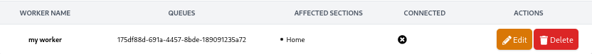
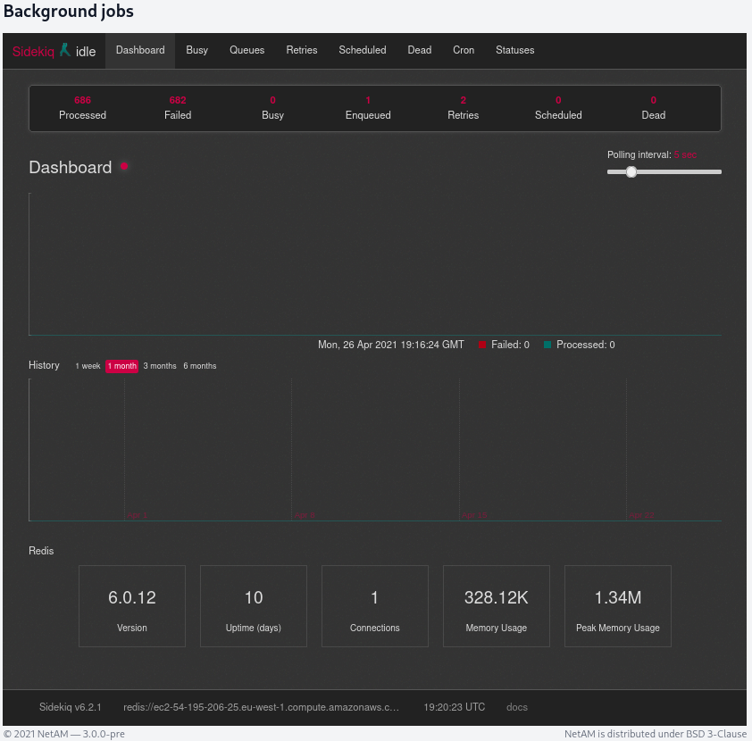

Administration guide¶
In this guide we will see how to administrate the NetAM stack
Users¶
In Admin Center you have the capability to create, edit or remove users.

When you are on the user page, you can also see its permissions on different NetAM module.

Backups¶
You can launch a database backup directly from the interface.

Workers¶
To allow you to split load between multiple workers, we provide a worker registration space.
The default worker is installed on the same host as NetAM manager and cannot be managed, it is used only for internal tasks.

How to add worker to NetAM¶
When you have created your worker with their name, and their affected section, you can launch it.

To start your new NetAM worker, you can use docker-compose located on GitHub.
version: '3.7'
services:
worker:
build:
context: .
dockerfile: Dockerfile
image: netam/netam
environment:
SECRET_KEY_BASE: v1jFMms5qurpiYdw
SENTRY_DSN: ''
REDIS_HOST: 10.0.0.10
DB_HOST: 10.0.0.10
DB_NAME: netam
DB_USER: admin
DB_PASS: _PASSWORD_
restart: always
command: sidekiq -q "node:175df88d-691a-4457-8bde-189091235a72"
Sidekiq¶
If you are an advanced user of Sidekiq, you have direct access to Sidekiq dashboard.

Stack management¶
Upgrade stack¶
After you have installed the NetAM stack, you can update with two commands:
docker-compose pull
docker-compose up -d